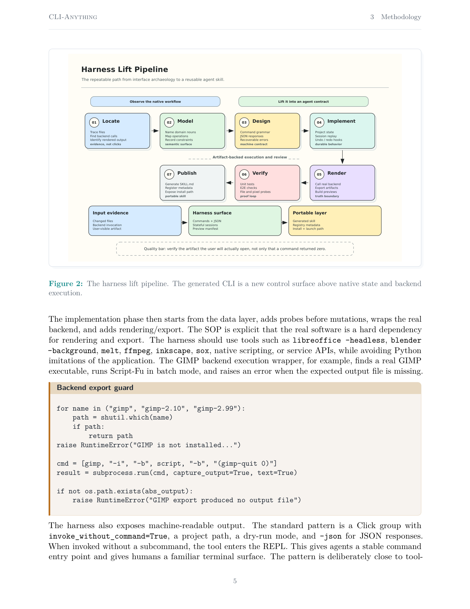
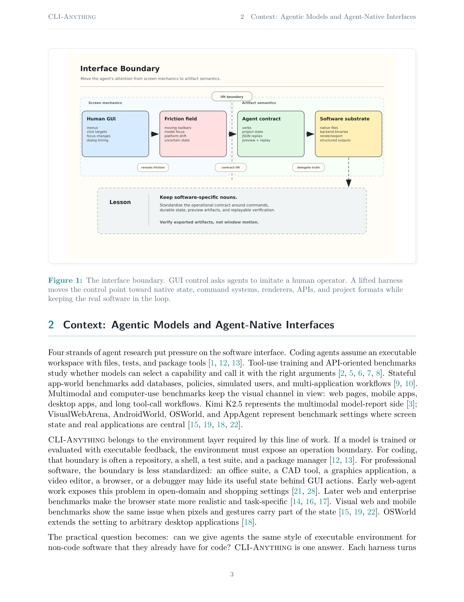
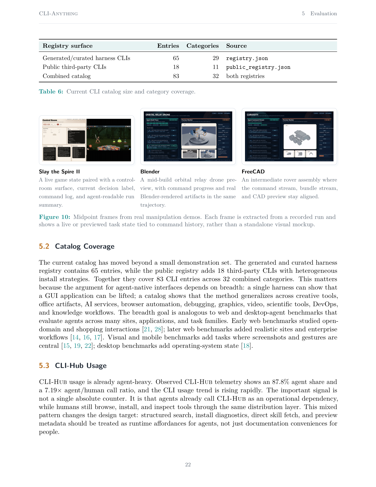

CLI-Anything：迈向 agent-native 的 computer use
CLI-Anything: Towards Agent-Native Computer Use
①开源贡献 Open-source Artifacts
官方在 https://github.com/HKUDS/CLI-Anything 完整开源了 CLI-Anything 生成器、CLI-Hub 包管理器以及数十个已生成的 harness（Apache-2.0），是“可跑代码”而非仅 demo；但未发布模型权重，也没有独立的 benchmark 数据集或 HuggingFace 资源。
| 类型 | 是否开源 | 内容 / 链接 |
|---|---|---|
| 代码 Code | ✔ 开源 | https://github.com/HKUDS/CLI-Anything 含 CLI-Anything 生成器（7-phase pipeline，以 Claude Code plugin / 各 agent skill 形式提供）、 cli-hub/ 包管理器（pip install cli-anything-hub）、每个被 lift 应用的 <software>/agent-harness/ 独立 Python 包、skills/ 下的 SKILL.md。Apache-2.0。 |
| 模型权重 Weights | ✘ 无 | 本文不训练模型，是接口 / 系统工作。 |
| 数据集 Dataset | ✘ 无 | 未发布独立数据集；测试靠真实软件后端产物校验。 |
| 环境 / Benchmark | △ 部分 | repo 自带 2,461 个测试（1,732 unit + 579 E2E + 19 Node.js，README 数字）用真实软件后端校验；但论文把“benchmarkable artifact construction”列为未来工作，目前没有正式 benchmark suite。 |
| 项目主页 / Demo | ✔ 有 | CLI-Hub 站点 https://clianything.cc；Claude Code 插件市场 /plugin marketplace add HKUDS/CLI-Anything。 |
| HuggingFace | ✘ 无 | 未见相关资源。 |
②研究动机与贡献 Motivation & Contribution
背景与问题
随着 LLM 的推理与 tool use 能力进步，主流 computer use 做的是 GUI agent——解读 screenshot、定位 UI 元素、执行鼠标点击去模仿人类交互。作者指出这套 GUI-centric 范式与 agent 的能力根本错配：pixel 级交互脆弱、依赖坐标与时序、界面一变就崩；它逼着 agent 去模拟人类的感知局限，而非发挥其在 structured data processing 与 programmatic control 上的算力优势。论文援引 Shneiderman 的 direct manipulation 来点破——GUI 本就是为人设计的：把状态压进 pixels、靠 pointing 与 focus、隐藏底层 project graph、假设连续感知；而 agent 真正需要的是 stable verbs、explicit state、JSON 输出、durable history、programmatic validation、可安装的 tool，以及在 task 当下发现接口的能力。
本文的切入点
作者把它当成一个基础的“软件接口”问题：一旦“点击应用”成了错误的抽象，真实软件究竟应当对 agent 暴露什么接口？核心主张是——只要后端、文件格式、命令模型、renderer 或 API 能被 lift，软件 artifact 就应通过同一个 explicit boundary 去 create / inspect / render / verify / replay；GUI 则退居人类显示面与 fallback。一个 stateful CLI harness 充当 agent-facing contract，把“最终真值”尽量委托给真实应用。
核心贡献
- 提出 interface thesis：专业应用需要一个架在其真实后端之上的 agent-facing contract（而非 pixel）。形式化为 harness 六元组 $H=(S,C,I,R,V,D)$ 与 6 条 agent-native 不变量（见方法）。
- 用已实现的系统证据支撑：harness generation（7 步 lift pipeline / HARNESS.md SOP）、preview protocol、skill generation、CLI-Hub 分发。
- 把工作放进 verifiable environments 与 tool-use training 的脉络里（ReAct / Toolformer / ToolLLM / Gorilla / API-Bank / SWE-agent / MCP / AppWorld / τ-bench / OSWorld / VisualWebArena / AndroidWorld / AppAgent 等）。
- 指出边界与未来：更广的 preview 覆盖、agent-first 的 CLI-Hub API、实验性的 scenario-level “CLI Matrix”、可 benchmark 的 artifact 任务。
③方法 Method
核心方法是 “Harness Lift” SOP（HARNESS.md）：把一个 GUI 应用 lift 成 stateful CLI。生命周期按因果顺序展开——discover 应用的后端 contract → 围绕它建 stateful harness → 用真实后端发布 truthful preview → 生成 agent-readable skill → 经 CLI-Hub 分发。

7 步 Lift Pipeline
整个 lift 被拆成 7 个阶段（Figure 2），每步都强调“以 evidence 而非 click 为准”：
- 01 Locate：追踪文件、找 backend calls、识别 rendered output——以证据而非点击为准。
- 02 Model：命名 domain nouns、映射 operations、记录约束。
- 03 Design：设计 command grammar、JSON responses、可恢复 errors——确立 machine contract。
- 04 Implement：project state、session replay、undo/redo——实现 durable behavior。
- 05 Render：调真实后端、export artifacts、build previews——确立 truth boundary。
- 06 Verify：unit/E2E tests、文件与 pixel 探针——形成 proof loop。
- 07 Publish：生成 SKILL.md、注册 metadata、暴露 install path。
贯穿全程的质量标准是：验证用户真正会打开的 artifact，而不只是命令返回 0。
关键设计要点
双模 CLI。每个 harness 既是 stateful REPL 又是 one-shot subcommand 工具。标准实现是一个 Click group，invoke_without_command=True，带 project path、dry-run、--json；不带 subcommand 时进入 REPL。命令围绕软件领域模型组织成 command groups（projects / layers / pages / tracks / clips / filters / parts / scenes / exports…）。
真实后端是硬依赖。渲染 / 导出必须调真实软件，例如 libreoffice --headless、blender --background、melt、ffmpeg、inkscape、sox 或原生脚本 API，避免用 Python 假冒应用。论文给出 GIMP 的 backend guard 例子：用 shutil.which 找真实 gimp，批处理跑 Script-Fu，若输出文件不存在则直接 raise。
契约形式化：harness 六元组
论文把一个 harness 形式化为：
$$H = (S,\ C,\ I,\ R,\ V,\ D)$$- $S$ = persistent state space（project / session 文件、undo history、live preview、native artifacts）；
- $C$ = command vocabulary（领域 mutation 与 probe，经 Click subcommands 与 REPL 暴露）；
- $I$ = inspection surface（JSON 的 status / list / info / schema / history / preview-summary）；
- $R$ = rendering / export relation（委托真实软件或其原生后端工具）；
- $V$ = verification layer（unit/E2E/subprocess 测试、文件格式校验、pixel/media 校验、backend-gated 断言）；
- $D$ = discovery layer（SKILL.md、registry metadata、install 策略、entry point、CLI-Hub 记录）。
6 条 agent-native 不变量
- Explicit state：workspace 必须被命名 / 保存 / 可 inspect，不能让 GUI focus 当唯一真值。
- Typed actions：命令映射到领域操作，鼠标手势仅作 fallback，失败要给 actionable error。
- Cheap inspection：提交下一步前能先问“改了什么”。
- Backend truth：最终 render / export 走真实软件或诚实的原生后端。
- Programmatic verification：校验用户会打开的 artifact，return code / 中间文件仅作旁证。
- Discoverability：agent 能从结构化 metadata 发现 / 安装 / 读取 / 调用接口。
论文也明说契约何时不成立——若 $S$ 不透明、$C$ 无法映射到原生操作、$R$ 在 headless 下不可用、$V$ 只能靠 pixel 观测，则仍需 accessibility / GUI scripting。CLI-Anything 的精确 scope 是：当 backend / 文件格式 / 命令模型 / renderer / API 可被 lift 时，agent 应优先用这个 lifted contract。
State = agent workspace
方法让 state 成为一等公民：JSON project 文件作可 inspect 的 workspace、session 文件记录当前 project 路径与修改态、undo/redo 栈让探索可恢复、dry-run 让 agent 先验证再 mutate、deterministic JSON 让 diff 有用、文件锁防并发损坏。论文给了 FreeCAD 的 session 例子——保存 undo 快照、维护 redo、追踪 modified、加锁后持久化 JSON。要点是：截图让 agent 只能“推断”操作是否成功，而 harness 让它能 session status --json、列 history、undo、渲染 preview bundle——CLI 本身变成了一个有 memory / recovery / feedback 的 agent workspace。
Preview 作为 display protocol
agent 仍需视觉反馈，但本文把 preview 与 GUI streaming 解耦，定义磁盘上稳定的 bundle：manifest.json + summary.json + artifacts/（图像 / clip / JSON dump / 模型）；live 工作流再加 session.json（可变的当前 head）与 trajectory.json（append-only 的 command→preview 历史）。producer / consumer 分离：harness 用 cli-anything-<software> preview ... 发布（拥有真实后端、source fingerprint、truthful artifact）；CLI-Hub 用 cli-hub previews inspect/html/watch/open 只读消费。真值约束上，明确拒绝 toy renderer 与 GUI 截图抓取作为 preview 真值；若为可视化插了临时相机 / 灯，bundle 要做标注。当前有 5 个 preview-capable 集成：Shotcut、Openscreen、Blender、FreeCAD、RenderDoc。
Discovery / 分发 / CLI-Hub
SKILL.md 与 CLI-Hub 是接口基础设施。SKILL（当前 61 个）给 agent 在 task 当下的能力描述（命令组、示例、JSON 用法、前置软件、约束）。CLI-Hub 则是 package + registry 层：local registry 65 条 / 29 类，public registry 18 条 / 11 类；installer 跨 pip / npm / uv / bundled / command 分发；list / search 支持 JSON。作者明说当前 CLI-Hub 仍偏人类向，下一版应做 agent-first（结构化 capability search、install plan、status 诊断、直接 skill fetch、preview metadata、可查询 schema），并把它与 MCP 摆在一起对照：MCP 是 model-provider 的 tool / context 协议，CLI-Hub 是 CLI harness 的 package / skill / capability 层（互补而非替代）。

invoke_without_command=True + --json + dry-run 是标准骨架；渲染必须落到真实后端二进制（blender --background 等）；测试即接口设计的一部分——弱 harness 只说“返回 0”，强 harness 说“命令生成了 project、后端渲染了它、且输出有预期结构 / 可见内容”。
④实验评估 Evaluation
评测口径
本文把 CLI-Anything 当“接口系统”来评，关注 surface area / 生产使用 / 生态成熟度，而非传统“我方 vs baseline 的 benchmark 准确率表”。没有与 GUI agent 直接打分对比的数字表（这点要如实写）。证据有三类。
(1) 真实 manipulation artifact
第一类证据是三段录制 demo 的 midpoint 帧（Figure 10）——Slay the Spire II 游戏控制、Blender orbital relay drone preview、FreeCAD Curiosity rover preview。强调这些是真实运行切片而非 mock 截图，命令面 / 状态轨迹 / 渲染态同步移动。

(2) Catalog 覆盖
| Registry surface | 条目 / 类别 | 来源 |
|---|---|---|
| Generated/curated harness CLIs | 65 条 / 29 类 | registry.json |
| Public third-party CLIs | 18 条 / 11 类 | public_registry.json |
| Combined catalog | 83 条 / 32 类 | 合计 |
顶部类别（combined）：ai 9、devops 7、web 7、graphics 5、video 5、communication 4、office 4、gamedev 3、image 3、knowledge 3、3d 2、audio 2。
(3) CLI-Hub 生产遥测
| 指标 | 数值 |
|---|---|
| 总调用 | 129,916 |
| agent 占比 | 87.8%（114,057 agent calls） |
| human 占比 | 12.2%（15,859） |
| agent / human 比 | 7.19× |
| 观测窗口增长 | +694.1%（16,361 → 129,916） |
这些数字的解读不在单个绝对计数，而在于：agent 已经把 CLI-Hub 当作运行时依赖来调用，同时 human 仍在浏览 / 安装 / inspect。其它仓库信号：61 个 companion skills；5 个 preview-bundle 集成；public registry 安装策略多样（npm 8、pip 3、brew 2、bundled 2、command 1、script 1、uv 1）。
两个 case study（质性评测）
Blender（成熟后端 lift 模式）。Click 树有 12 个 group、54 个命令函数（53 public + 1 hidden monitor）；agent-facing 的 .blend-cli.json 作工作态，.blend 与渲染图作后端产物。四阶段映射：命令 mutate JSON scene contract → domain 模块校验 Blender 概念 → scene-contract lowering pass 把 JSON 图降成完整 bpy 脚本 → backend wrapper 跑真实 blender 二进制（headless）并核验产物存在；EEVEE 脚本对版本容错（新版选 BLENDER_EEVEE_NEXT，4.0 选 BLENDER_EEVEE）。共 228 个测试。
Slay the Spire II（先在应用内造后端边界的模式）。Python 侧 28 个 Click 命令；in-game C# bridge（STS2_Bridge）把游戏归一成 15 个 decision states 与 24 个 single-player action verbs，经 loopback HTTP（localhost:15526）+ JSON 暴露；bridge 跑在 Godot 主循环里，用 ConcurrentQueue<Action> 在 ProcessFrame 上排空 frame-owned 工作。关键对照：Blender 是“找到已存在的后端边界”，STS2 是“先在应用内部造一个后端边界”。这把数据采集从“模仿 pixel / 输入轨迹”变成“在确认过的语义算子上做组合”。
消融 / 分析（cross-harness 失败模式）
- 后端进程成功退出却没产出 → 修复 = artifact 校验优先于 exit-code。
- 仅改 project 却在 export 时丢失（render 路径缺某 filter / effect 映射）→ 修复 = 记录 project-only 特性或补真实 render 映射。
- 无状态命令跨回合丢上下文 → 修复 = 显式 session state + autosave + status 探针。
- preview 截图变装饰、失真 → 修复 = 绑定真实 project state 与后端产物的 bundle protocol。
- 可安装性是可用性的一部分 → 修复 = registry + 安装策略 + skills + 清晰后端报错。
⑤洞见 Insights
- agent-native 接口 vs 拟人 GUI 是方法论分水岭。与其造更强的 screen reader / click simulator 去逼 agent 模拟人类感知，不如重设交互范式，围绕 agent 的强项（精确 programmatic control + deterministic execution）来设计接口——keyboard-and-mouse 是低层运动接口而非语义动作接口，同一意图（“对某怪打某张牌”）有无数像素 / 时序 / 坐标轨迹，CLI 把这一等价类塌缩成一条带显式参数的稳定命令。
- “如果 artifact 能被代码 check，它往往就能被代码 build。”coding agent 之所以好用，是因为环境可执行（命令跑、测试挂、文件 diff、成功可验证）；把同一类可执行 / 可校验 / 有真值显示路径的接口层给到专业软件，就把许多 GUI computer-use 任务变回 executable environment 任务。
- harness 有两种生长模式。成熟后端→直接 lift（Blender）；后端结构残缺→先在应用内造 adapter 再 lift（STS2）。两者共享同一 agent-facing 契约（explicit state / typed actions / backend truth / testable），差别只在“接口边界该放哪”。
局限与未来
有些软件只暴露编译后的二进制 / 不透明状态 / 难 lift 的交互，仍需 accessibility 或 GUI 自动化；部分创作决策仍需丰富的视觉判断；部分 preview 集成尚早、覆盖不全。Web / 手机 / 桌面 agent 工作（WebArena、OSWorld、AndroidWorld、AppAgent 等）在“视觉 / 浏览器原生才是真实环境”的场景里仍直接相关。下一步是 benchmarkable artifact construction：让 task suite 要求 agent 产出图 / 报告 / CAD 模型 / 视频剪辑 / GPU capture 分析 / office 文档，再用程序化方式评估。
与相关工作的关系
CLI-Anything 自我定位在“environment 层”。它把 coding agent 的可执行环境（repo + shell + 测试 + 包管理，见 SWE-bench / SWE-agent）推广到非代码软件；与 tool-use / API 工作（ReAct、Toolformer、ToolLLM、Gorilla、API-Bank）共享“命令 / API 即可调用动作”的契约；与 verifiable-reward / tool-use training（Qwen3-Coder-Next、DeepSeek-V3.2、Kimi K2.5）共享“agent 需要可执行、可校验反馈”的前提；与 MCP 互补（MCP 是 model-provider 协议，CLI-Hub 是 CLI harness 的包 / 技能 / 能力层）；并呼应 SWE-agent 的洞见——agent-computer interface 的接口设计本身实质影响 agent 在交互式软件任务上的表现。
⑥官方代码库 CLI-Hub / CLI-Anything 调研
实测 https://github.com/HKUDS/CLI-Anything 是“可跑的平台 + 工具集”，不是只放 demo——Apache-2.0，约 42.8k stars（WebFetch 抓取时），含生成器、CLI-Hub 包管理器、数十个已生成 harness 与 SKILL.md。
仓库做了什么
- CLI-Anything 生成器：一条自动化的 7-phase pipeline，把源码 / 应用 lift 成生产级 Python CLI harness；以 Claude Code plugin 与多 agent 平台 skill（Codex / Hermes / Reasonix 等）的形式提供，入口如
/cli-anything <path-or-repo>、/cli-anything:refine <path> [focus]。 - CLI-Hub 包管理器：
pip install cli-anything-hub；命令cli-hub list/cli-hub search <query>/cli-hub install <name>；跨 pip / npm / uv / bundled / command 安装策略；registry.json + public_registry.json 作分发 metadata。 - 已生成 harness：每个应用一个
<software>/agent-harness/独立 Python 包，README 列 48+ 应用（GIMP、Blender、Inkscape、Audacity、Krita、Kdenlive、Shotcut、OBS、Draw.io、LibreOffice、Zotero、Obsidian、n8n、QGIS、FreeCAD、Godot、LLDB、Nsight Graphics、Unreal Insights、ComfyUI、Ollama 等）。 - Agent 集成 / 发现：
skills/下的 SKILL.md；cli-hub-meta-skill让 agent 自主发现并安装 CLI；SKILL 兼容 Claude Code / Codex / OpenClaw / Nanobot / Reasonix / Antigravity 等。
安装与用法
pip install cli-anything-hub
/plugin marketplace add HKUDS/CLI-Anything
/plugin install cli-anything
cli-hub list / cli-hub search <q> / cli-hub install <name>可跑程度
属于“可跑代码”。dual modes（stateful REPL + subcommand），全命令带 --json；README 称 2,461 个测试通过（1,732 unit + 579 E2E + 19 Node.js），100% 通过率，用真实软件后端校验。
MCP / agent loop
仓库未内置通用 agent loop（task-automation 指标是隐含而非形式化的）；有一处 live bridge（ArcGIS Pro）演示经 MCP 的 live session 控制；CLI-Hub 自身定位为 CLI harness 的包 / 技能层，与 MCP 互补。
benchmark / HF / license
无独立 benchmark 数据集，无 HuggingFace 资源；测试即“真实软件调用 + 产物校验”。许可证 Apache-2.0。版本里程碑上 README 提到 v0.2.0（HARNESS.md 渐进式披露重构、guides/ 按需加载）。
开源产物小表
| 类型 | 可跑? | 说明 |
|---|---|---|
| CLI-Anything 生成器（7-phase） | ✔ 可跑 | plugin / skill 形式，/cli-anything 入口 |
| CLI-Hub 包管理器 | ✔ 可跑 | pip install cli-anything-hub；list / search / install |
| 已生成 harness（48+ 应用） | ✔ 可跑 | <software>/agent-harness/ 独立包，--json + REPL |
| SKILL.md / meta-skill | ✔ | agent 发现 / 安装入口 |
| 通用 agent loop | ✘ | 未形式化；仅 ArcGIS live bridge demo（MCP） |
| benchmark / 数据集 / 权重 / HF | ✘ | 未发布 |